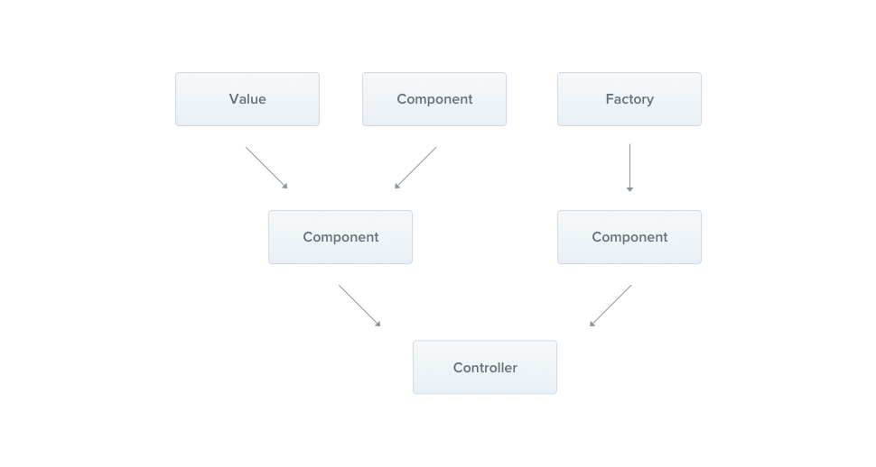

Nest.js
快速搭建基于 NodeJS 的后端服务
Agenda
- Nest.js 简介
- 使用 TypeORM 轻松与数据库交互
- 使用 JWT 鉴权
Nest.js 是什么?
Nest.js 是基于 Node.js开发的 Angular 语法风格的 渐进式后端框架
Angular 语法风格
import { Module } from '@nestjs/common';
import { AppController } from './app.controller';
import { AppService } from './app.service';
@Module({
imports: [],
controllers: [AppController],
providers: [AppService],
})
export class AppModule {}渐进式后端框架
- MVC
- REST
- GraphQL
- Micro-Services
- Web Sockets
NEST.js 三板斧
- Controller
- Provider
- Module
Controllers

Providers
Module

Demo time~
TYPEORM
快速搭建、操作数据库
什么是 TypeOrm ？
TypeORM 是一种应用于 Node.js 的关系映射框架，它用于实现编程语言里不同类型系统的数据之间的转换。从效果上说，它其实是创建了一个可在编程语言里使用的“虚拟对象数据库”。举个栗子
import { Entity, PrimaryGeneratedColumn, Column } from 'typeorm';
@Entity()
export class User {
@PrimaryGeneratedColumn()
id: number;
@Column()
firstName: string;
@Column({ nullable: true })
middleName: string;
@Column()
lastName: string;
@Column({ type: 'bool', default: false })
isMale: boolean;
}Demo time~
JWT
轻松搞定授权、鉴权问题
什么是 JWT ？
JSON Web Token 是一种开放的行业标准（RFC 7519）方法，用于在双方之间安全地传输数据。Nest Guards